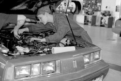

|
BYU-Idaho female students pursue non-traditional majors
by Kelly Smurthwaite
SMU01001@BYUI.EDU
Scroll Staff
 |
| Jen Griffin, a freshman from Pocatello, Idaho, is the only female auto mechanic major at BYU-Idaho. It was strange for her to be in classes with only boys at the beginning of the semester, but now it is normal, she said. Scott Cameron / Scroll |
|
Abby Young, a junior from Orem, Utah, is not a psychology major.
But she almost was.
Young switched her major to landscape design and horticulture, a major that is not common among female students at BYU-Idaho.
Many people think it is an interesting major for a female student, Young said.
“Many people don’t really know what my major is,” she said.
Young was a psychology major but decided to pursue something else.
“I went to the counseling center ... I have a strong background in art, so I started reading about landscape design. I went to the Benson Building and looked around at the things they had on the walls — I really liked them,” she said.
Young said she wanted to have a career where she could help people — and because she decided she did not want to go in to psychology, she thought that she could help people in a different way by being a landscape designer.
In high school, Young did not take any landscape classes, but she did take many art and biology classes that have helped her with her college courses.
Young has started planning what she will do after college with her degree.
“I think that I have many options. If anything, I would want to be a top designer out of my home,” she said.
Lucy Sibbett, a sophomore from Evanston, Wyo., is an architecture major and said she believes that many girls may be intimidated by majors that are dominated by males, such as auto mechanics, engineering and others.
“Some girls may not have enough confidence [to go in to these majors]. Sometimes it can be intimidating,” she said.
Stereotypes are often put on girls about what they should and should not major in, Sibbett said.
Since she was a senior in high school, Sibbett knew that she had a “knack” for architecture and wanted to pursue it in college.
“My drafting teacher [in high school] wouldn’t allow me to go in to anything but architecture [in college],” she said.
Out of about 30 students in her architecture classes, only three to six of those are girls, Sibbett said.
When she tells people what she is majoring in, many people do not take her seriously, she said.
“A lot of boys think that I am joking — sometimes I have to prove it to them,” she said.
Jen Griffin, a freshman from Pocatello, Idaho, is the only female auto mechanic major at BYU-I.
She said that being in classes with all boys was a unique experience for her at the beginning of the semester.
“At first it was odd for all of us and I felt out of place,” she said. “It was intimidating for me but now I am comfortable with it.”
|